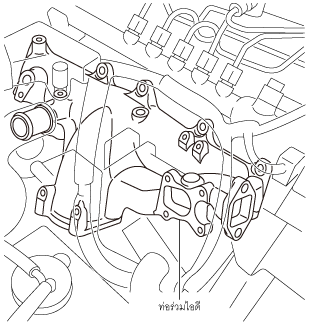

ท่อร่วมไอดี [SKYACTIV-D 2.2]
id0113z7003700
จุดประสงค์/การทำงาน
• จ่ายอากาศเข้าไปยังแต่ละสูบเท่าๆ กัน
• ทำให้ประสิทธิภาพการเผาไหม้และสมรรถนะของเครื่องยนต์ดีที่สุดโดยการจ่ายอากาศเข้าไปยังแต่ละสูบ
โครงสร้าง
• ท่อร่วมไอดีจะติดตั้งอยู่ที่ฝาสูบ

ac5wzn00001937